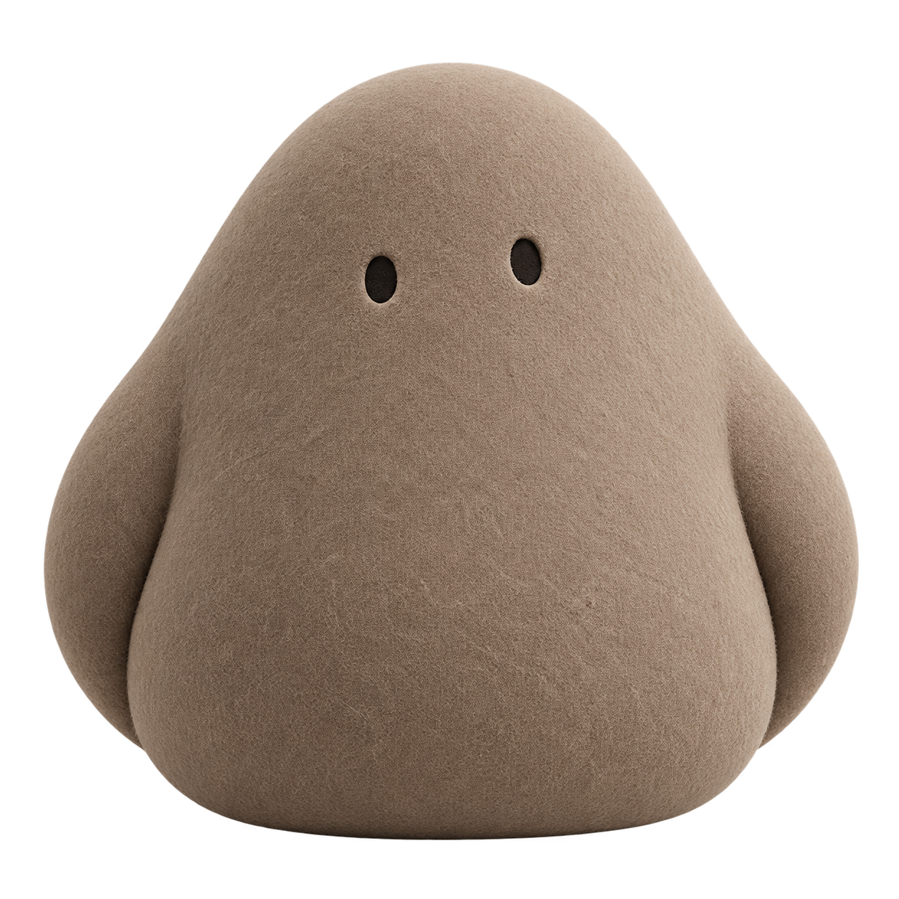

No perfect words needed.
A half-formed idea is a perfectly good place to start.
Life moves fast. Your thoughts deserve a place to land.
Meet Glim, a thinking companion that’s being built to remember what matters to you.
In development for iPhone. Made with a little care.

01 / A familiar feeling
A note you never opened again. A conversation buried in a chat. The reason you made that choice, somewhere in last month.
What if you had one gentle place to put those thoughts—and come back to them when they matter?
02 / A little continuity
Start with what’s on your mind.
Come back with a little more context.
An interactive example with fictional thoughts.
A companion, on your terms
A half-formed idea is a perfectly good place to start.
The goal: memories you can inspect, correct, and make your own.
Space to explore your options, with your own priorities in view.
03 / Building in the open
I’m Masa, and I’m building Glim as part of my Massalog journey. Sharing the process, asking better questions, and figuring out what’s actually useful.
Have a thought about it? That’s where this starts.
Follow the journey on XGet a note when Glim is ready to try.
Help shape what it becomes.
Glim is still in development. This page is a first look at the idea and experience. The interactive example uses fictional content.
Pricing hasn’t been decided yet. We’re first working out what makes Glim useful enough to return to.
The app is being designed around memories you can inspect and correct. We’ll explain how data is handled before inviting people to use it. This website preview doesn’t accept personal thoughts or send signup information.